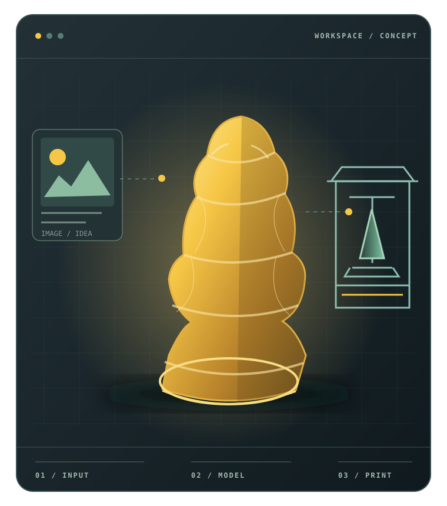

建模难
照片里有清楚的想法，却不知道如何做出能检查的 3D 形体。
先看设计，再确认模型PRODUCT VISION / AI × PHYSICAL MAKING
从一个想法，到一个真实存在的物体。
把图片或文字变成可检查的 3D 作品，再把外观编辑、材料选择与 Orca 原生打印准备接成一条清晰的路。
产品蓝图与集成分支静态证据 · 非软件实时截图或实物打印演示

01 / THE REASON
传统 3D 打印把建模、配色与切片分成几道专业关卡。AI 可以降低起步门槛，但每一步仍需要用户看懂、确认并保留选择权。
照片里有清楚的想法，却不知道如何做出能检查的 3D 形体。
先看设计，再确认模型屏幕上的颜色、心里想要的外观和实际耗材，常被当成一回事。
把目标与材料能力分开参数之间互相影响；更换模型或材料后，旧切片也可能不再适用。
给出可比较、可撤销的建议02 / THE LOOP
用户确认设计，检查真实模型，按需要美颜与匹配材料。正式工程、切片和设备动作仍由 Orca 原生流程承接。
图片或文字想法
确认 AI 设计效果
生成并检查真实模型
按需编辑与保存版本
匹配可用耗材
准备、切片、明确启动
返回也是流程的一部分：设计不满意可重做；编辑与配色可撤销；任务中断先按同一身份恢复；工程变化后重新检查切片。
03 / CAPABILITIES
状态按 OrcaSlicer 集成分支代码和已知验证边界标注。模块存在表示已有基础，完整体验仍需逐场景验收。
从输入、任务确认到产物交接，保持当前作品与版本上下文。
仍需完整新 UX 与跨页面恢复验证图片/文字任务、付费确认与同任务恢复已有代码路径。
生成准确性与真实服务链需单独评价在模型上做局部编辑、预览、对比，并保存派生版本。
复杂格式、失败和历史组合待验把用户目标外观映射到当前可用的物理耗材与工艺。
实体色差和配方可执行性待验证Orca 原生 Prepare 管项目、预设与正式切片；智能候选可比较、显式应用并撤销。设备启动与实物结果另行确认。
当前 G-code 新鲜度、设备和成品按层验收05 / READ THE SOURCE
PRD 与旅程的正式维护源在 OrcaSlicer 仓库集成分支；网页随 creative-hub 发布，源文档需先合入对应分支。